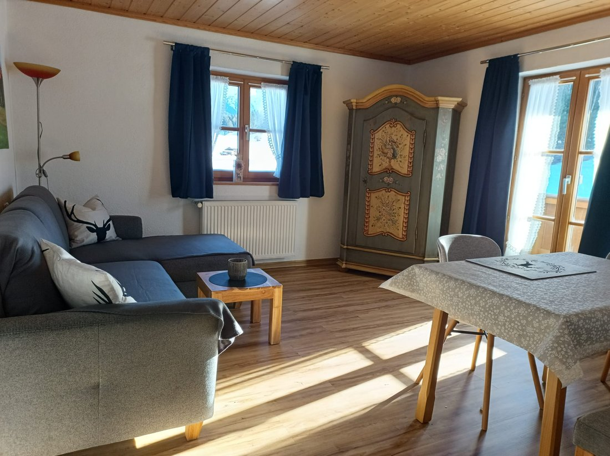
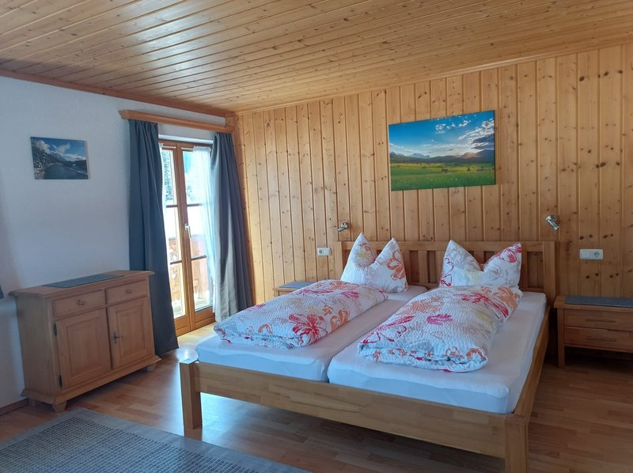
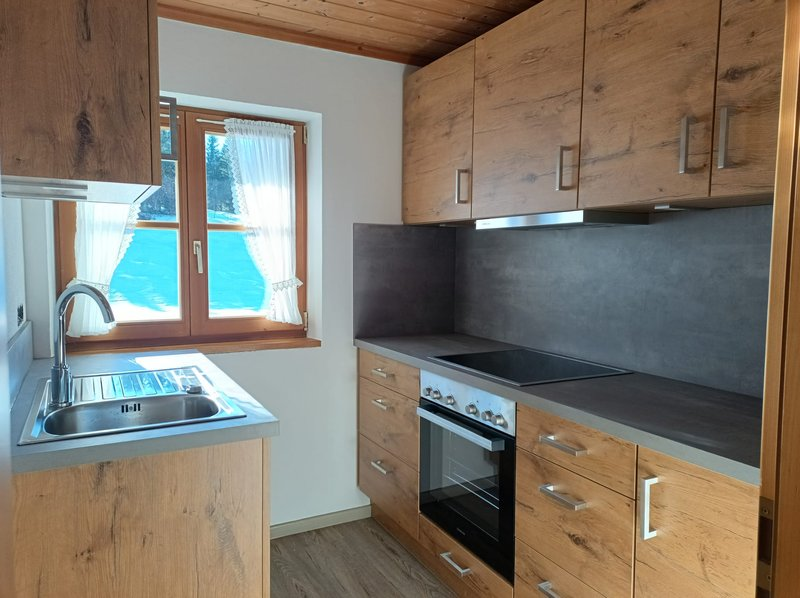
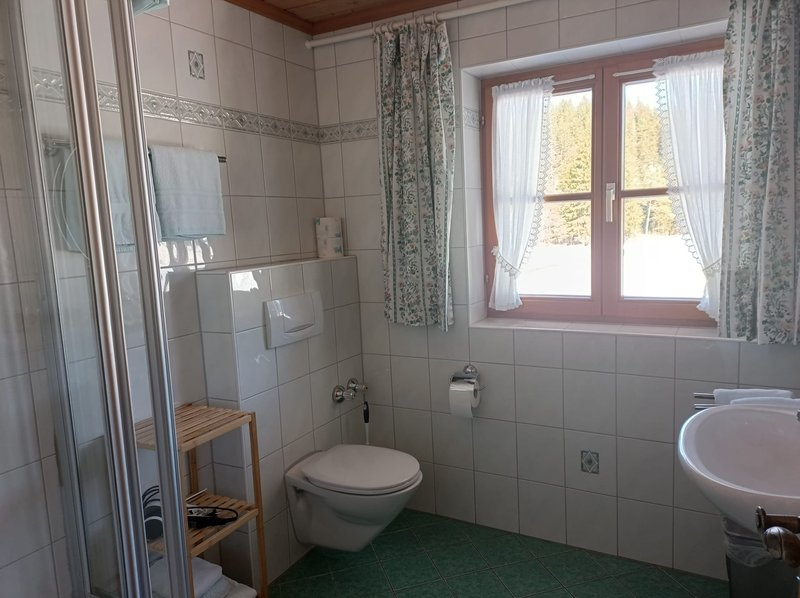

Die frisch renovierte Ferienwohnung
2 Personen · separates Schlafzimmer · Balkon nach Osten und Süden
Unsere frisch renovierte Ferienwohnung bietet Ihnen modernen Komfort und eine gemütliche Atmosphäre für erholsame Tage. Genießen Sie die Sonne auf dem Balkon nach Osten und Süden, ideal für ein Frühstück im Morgenlicht oder entspannte Stunden am Nachmittag.
Die Wohnung verfügt über separate Schlafzimmer, die angenehme Ruhe garantieren, sowie eine gut ausgestattete Küche, in der Sie problemlos Ihre Lieblingsgerichte zubereiten können. Ein modernes Bad mit Dusche/WC rundet das komfortable Angebot ab.
Wir freuen uns darauf, Sie in unserer schönen Ferienwohnung begrüßen zu dürfen!
Exklusive: Kurtaxe. Freies WLAN.